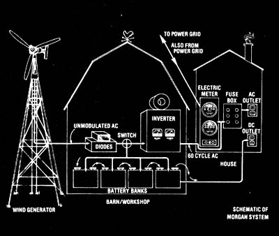

A schematic of the whole Morgan setup. Variable amounts of modulated AC electricity from the wind-driven alternator are fed into the barn/workshop and then demodulated into direct current by the diodes. The DC can then be switched into a bank of batteries and either stored for later use or passed on through to the house where it operates lights and DC appliances. The ""juice"" also can be shunted to the Gemini Synchronous Inverter and changed back to alternating current that is a regulated 110 volts at 60 cycles per second, which exactly matches the A C in the Narragansett Electric Company's power grid. This AC enters the house (between a fuse box and an electric meter) and most passes through the fuse box and is used in the Morgans' standard AC appliances, lights, etc. Only ""excess"" AC ? what's left over as the Morgans satisfy their needs ? feeds through the meter to the distribution grid. That's it the wind blows. It it doesn't, the Morgans can either draw AC from Narragansett or DC from their batteries.